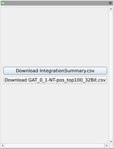

Mass Spec Aimbot – Web Version
Link to application: https://holman716.github.io/MassSpecAimbot/WASM/MassSpecAimbot.html
Basic functionality
Mass Spec Aimbot is a utility designed to help visualize ions and their isotopologues across the contents of one or more MS file. With it you can specify a base mass, possible labels, and possible adducts and the program will automatically calculate what m/z values to search for, even for MS2 data. You can also use the application to deep dive into the data, visualizing spectra at specific scans or even composite spectra over a RT window.
Loading files
Supported formats
For best results in the web version, per-process files through MSConvert and keep only the top 100 peaks per scan.
Process
From the initial screen look at the ‘loaded files’ dialog in the top-left corner and click “New”. Select the file you wish to visualize and click “Open” to begin loading the data in the background. The file will initially be displayed in the dialog with grey text, but once they have been loaded into memory the text will change to black. Click on any loaded file to display its TIC data in the top-right dialog, or if it hasn’t loaded yet the program will display it as soon as it loads.

Figure 1: Mass Spec Aimbot with mzML file loaded
Targeted analysis
Manual targeting
Usually when looking at a file there is a particular RT window and ion of interest. You can track this in Mass Spec Aimbot by specifying a “Compound Group”, which the program defines as an ion or group of ions that can all be found around the same time point. Look at the bottom dialog and ensure that the “Compound Group” tab is selected. On the left side click “Add” to begin the process of defining your group.
A pop up window will appear asking for the name of the group and what RT point to look around. You can also load from an external file at this screen, which will be covered in the next section.

Figure 2: Defining a Compound Group name
Since the group will initially have no ions the program will go ahead and show the “Add/Edit Ion” window. From here specify what MS level you are using, which will in turn toggle whether the dialog requests information about the parent ion as well. Enter the ion formulae in the proper boxes, or if you don’t know the formula off hand (as might happen if you are investigating an unknown peak) you can also use the m/z.
The “Isotope Labels” box is pre-filled with entries for 13C, 15N, and 2H, but each row can be edited to fit whatever chemical element and substitution mass you need. When working with MS2 data the program will automatically ensure that the maximum possible substitutions of the product ion is not greater than the parent ion, and when producing those permutations in the next step will ensure that the resulting isotopologues can exist.
On the right side there is a list of adducts, which can be changed from positive mode adducts to negative mode adducts by clicking the radio button above the list. Check all rows with adducts you would like to keep an eye out for, and check the “In Product” as well if you are using MS2 and expect to see the adduct on the product ion. Note that the checkboxes may not be easily visible in the web version, and can be accessed by using the scroll bar at the bottom.

Figure 3: The Add/Edit Ion window
Navigating ‘Compound Group’ panel

Figure 4: The Compound Group panel
Now that we’ve gone over the basic functions on how to add new Compound Groups it’s time to look at the bottom dialog in detail. The top left corner that we’ve used so far contains a drop down list that allow you to select which compound group you wish to work with, with the retention time of that compound group displayed as a label in the top right corner.
The bottom left corner has two spin boxes for m/z tolerance, though when working with MS1 data the precursor tolerance box is visible but serves no function. The up/down buttons will increment the number along the most common tolerances- so from 0.5 -> 0.1 -> 0.05 -> 0.01 -> etc. At this time PPM is not supported, but that may change in the future. Once the desired tolerance is reached click the “Update” button, which will be shown in green if there are any changes to be made, to update the TIC panel and recalculate the integration export information.
The large table taking up most of the dialog is devoted to the ions and permutations on those ions. The buttons on top allow you to edit the list of base ions, with the ability to delete secondary base ions located under the edit dialog.
The leftmost column in the table allows isotopologues to be navigated in tree form. If a ‘+’ is visible on an ion that means you can click on the ‘+’ to expand the possible permutations, such as adding on a labeled atom or an adduct. If a ‘-‘ is visible you can click on that to close that tree branch. A ‘|’ indicates that no more permutations are possible from that branch given the constraints of the base ion. White space is added before the symbols to indicate how deep into the tree the row is to help with organization.
The rightmost column contains a checkbox to indicate if you want to try to display the row as an ion trace in the TIC panel. This usage ignores the suggested RT and instead displays any points where the ion can be found along with its intensity. In the web version the interface may be too narrow to display all columns, necessitating the use of the scroll bar to access the checkbox.
Viewing spectrum
TIC panel
When a file is selected the top-right panel shows information about the spectrum contained within. By default this only shows the TIC, but if one or more ion trace is shown from the Compound Group panel it will also track individual ions across the file. Additionally if a Compound Group is loaded it give the option to highlight the area of the selected peak as determined by the integration algorithm.
To navigate the TIC panel simply click and drag a portion of the graph to zoom in, and click the relevant button to reset the zoom. Whenever the mouse is hovering over a valid time point a red bar will appear along with text indicating the RT of the cursor’s location.
Figure 5: The TIC panel zoomed in on two peaks, with the integrated peak highlighted and two selected ion traces found.
Viewing a RT window
Once you have zoomed in on an area you can quickly view the contents of the visible window by clicking the “Export” button and selecting “…composite of current view”. This will bring up a dialog showing the composition of the m/z and intensity values along the selected RT window (summed). This can be a quick way of determining what an unknown peak is made up of without having to look at individual spectra.
Figure 6: A composite view of a zoomed in peak within the test data, with a red bar indicating the m/z of the mouse’s location
Viewing individual scans
Any time you click on a point in the TIC window Mass Spec Aimbot updates the scan panel with information about that time point. The scan panel is located in the same place as the Compound Group dialog, except in a different tab. It can be zoomed in and navigated the same way as the TIC panel except it follows m/z rather than RT as the bottom axis and tracks the individual scan time in the panel title.

Figure 7: The scan panel activated and showing a single scan in the test data
___
